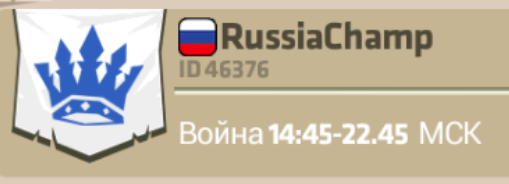

Страничка гильдии "RussiaChamp"

- О гильдии
Русскоязычная гильдия "RussiaChamp" основной целью преследует получение удовольствия от игры. В гильдию принимаются игроки постоянно играющие в Monster Castle и готовые соблюдать правила гильдии.
Время клановой войны: ежедневно начало около 14.45 МСК. Продолжительность 8 часов. - Текущие критерии приема в гильдию
Уровень от 25.
Желание и возможность участвовать в клановых войнах. - Обращение к согильдийцам
Друзья наша гильдия будет успешной только при приходе в нее новых активных игроков. Поэтому, большая просьба, при возможности, публикуйте в русскоязычном чате текст, типа такого:
[00ffff] Играю в отличной гильдии. Рекомендую гильдию [b]активным игрокам.
или
[00ffff] Играю в [ff00ff]боевой[00ffff] гильдии. Рекомендую гильдию [b]активным игрокам.
или любой другой текст, по которому к нам в гильдию придут новички. - Таблица званий и знаков отличий
- на 17.12.2016
- Шушилёк
- Adastra
- DarkMoonCastle
Общая таблица
Ник Звание Знаки отличия Adastra Граф-Гелиотроп Absolem.info Граф-Гелиотроп Шушилёк Граф-Гелиотроп snezheg Граф-Гелиотроп DarkMoonCastle Барон-Кристалл ВЕЛЬЗЕВУЛ Бывший ПЕТЕРГОФ Бывший екетоя Бывший SHEF Бывший krewed Бывший Balashiha Бывший - Активность игроков
- Внутригильдейские титулы и звания
С 1 августа 2016 вводятся следующие внитригильдейские титулы и звания за время членства в гильдии(от высшего к низшему):
- Великий Князь
- Князь
- Герцог
- Граф
- Барон
- Новобранец (7 дней)
Далее структура всех званий однотипна. Каждое звание разделяется на 3 ранга(от высшего к низшему):- Зеленый(герой)
- Красный(гелиотроп)
- Синий(кристалл)
Звания даются за время членства в гильдии. Новое звание каждый месяц. - Внутригильдейские знаки отличия
С 1 августа 2016 года за первые три места в рейтинге достижений за неделю игрок будет получать знак отличия. Время фиксации рейтинга каждую неделю в субботу в 22.00. Знаки присваиваются по следующему принципу:
- 1 место - три звезды
- 2 место - две звезды
- 3 место - одна звезда
Пять звезд заменяются на один кристалл.
Пять кристаллов заменяются на один гелиотроп.
Пять гелиотропов заменяются на один фрагмент героя.
Фрагменты не заменяются.
Таблица со званиями и знаками отличия распологается на этой странице. - Кому дается звание "Хозяин"
Звание "Хозяин" присваивается "Королем". Игроку достойно зарекомендовавшему себя игрой в клане может быть присвоено звание "Хозяин". Тогда на него накладываются дополнительные права и обязанности. Он обязан привлекать новых игроков в гильдию и следить за выполнением игроками правил гильдии. У него есть право принимать и исключать игроков из гильдии. Также у него есть право начинать ежедневные войны в заранее согласованное время.
- Кому дается звание "Страж"
Звание "Страж" присваивается "Королем" или "Хозяином". Игрокам с наивысшим рейтингом(среди имеющих звание "Воин") на текущий момент дается звание "Страж". Игрок обязан иметь боеспособный замок ко времени начала клановой войны, т.к. "Страж" 100% автоматически принимает участие в клановой войне для защиты "Короля" и врагам даются повышенные очки за взятия его замка.
- Кому дается звание "Подмастерье"
Звание "Подмастерье" присваивается "Королем" или "Хозяином".
Звание "Подмастерье" дается игрокам с самым маленьким уровнем или игрокам у которых замок не готов к войне. - Кому дается звание "Воин" Звание "Воин" присваивается всем членам гильдии автоматически.
- Внутригильдийское звание "Новобранец" Звание "Новобранец" присваивается всем новым членам гильдии автоматически и действует 7 дней.
- Кто исключается из гильдии
- Независимо от укомплектованности гильдии:
- Сейчас главный критерий. Игрок с рейтингом достижений за неделю ниже 5.
- Игрок незаходивший в игру более 7 дней и непредупредивший о своем длительном отсутствии "Короля" - исключается из гильдии.
- Игрок заходивший в игру, но не участвовавший ни в одной клановой войне на протяжении 7 дней. При полностью укомплектованной гильдии, если есть кандидат на вступление в гильдию:
- Исключается игрок не являющийся Новобранцем с минимальным рейтингом достижений за неделю, независимо от: величины рейтинга, уровня, звания.
- Заключительные положения
По мере развития игры и гильдии данные правила постоянно изменяются и дополняются.
Вопросы и пожелания присылайте на: andsemenoff<собака>ya.ru
Зачем принимать участие в клановых войнах?
- Опыт для героев
При захвате замков Ваши герои получают опыт и прокачиваются. В войне может быть много игроков ниже Вашего уровня или игроков с замками не готовыми к сражению.
- Гелиотропы Вы имеете шанс получить гелиотропы, как и при обычном сражении в многопользовательском режиме.
- Еще больше гелиотропов По итогам клановой войны каждый член гильдии получает гелиотропы в взависимости от места гильдии, занятого в войне. Их количество сильно отличается от занятого места. По опыту - несколько побед может принести каждому члену гильдии более десяти дополнительных гелиотропов. Поэтому очень важно, чтобы каждый зашел, победил и пренес очки для первого места в клановой войне.
Ваши приколы
Вопросы и ответы
- На кого/что тратить фрагменты героя?
- Как писать в чат цветом?
- Зачем атаковать крепость Сэма?
- Что значит в ежедневных заданиях "Покормить 1 раз"?
- Когда появляется Сэм и как его победить?
- Когда появляется сундук (сокровища Сэма)?
- Как лучше распологать войска для защиты замка?
- Дракон и его параметры.
- Ежедневные клановые войны
- Какие товары бывают на черном рынке?
- Затраты на использование магии.
- Как начисляются очки в гильдейских войнах?
- На кого/что тратить фрагменты героя?
Фрагменты героя рекомендуется копить и тратить только на покупку эпический героев. Желательно покупать на черном рынке, тогда цена будет 720 фрагментов за героя.
- Как писать в чат цветом?
Написать в квадратных скобках цвет, потом сам текст, например, [ff0000] набор в гильдию от 25 лвл.
Примеры, различных цветов:
[000000] - черный
[00ff00] - зеленый
[0000ff] - синий
[ffff00] - желтый
[00ffff] - голубой
[ff00ff] - розовый
[cccccc] - серый
можно применять теги [b] - жирный; [u] - подчеркнуть; [i] - курсив.
- Зачем атаковать крепость Сэма?
За атаку крепости Сэма дают очень хорошие награды, причем как индивидуальные, так и гильдейские.
Индивидуальные награды такие:
Сколько ресурсов за какое количество набранных очков дают:
100 очков: золото 100'000;
150 очков: вино 100'00;
200 очков: фрагментов 5;
275 очков: золото 200'000;
350 очков: вино 200'000;
425 очков: фрагментов 10;
550 очков: золото 300'000;
675 очков: вино 300'000;
800 очков: фрагментов 15;
1000 очков: золото 400'000;
1200 очков: вино 400'000;
1400 очков: фрагментов 20;
1700 очков: золото 500'000;
2000 очков: вино 500'000;
2300 очков: фрагментов 25;
Награды приходят в письмах. Поэтому их можно забирать не сразу, а при необходимости и вас не ограбят.
Гильдейские награды такие:
1 место: 300 фрагментов по 2'000'000 золота и вина;
2-3 место: 200 фрагментов по 1000'000 золота и вина;
4-10 место: 150 фрагментов по 750'000 золота и вина;
11-20 место: 100 фрагментов по 500'000 золота и вина;
21-50 место: 70 фрагментов по 350'000 золота и вина;
51-100 место: 50 фрагментов по 250'000 золота и вина;
- Что значит в ежедневных заданиях "Покормить 1 раз"?
 Для выполнения нужно у любого героя во вкладке "Улучшить", использовать(поглотить/уничтожить) либо гелиотропы, либо элексиры. При этом если до следующего уровня героя меньше опыта, чем тот который Вам причитается за уничтожение - этот опыт пропадет.
Для выполнения нужно у любого героя во вкладке "Улучшить", использовать(поглотить/уничтожить) либо гелиотропы, либо элексиры. При этом если до следующего уровня героя меньше опыта, чем тот который Вам причитается за уничтожение - этот опыт пропадет. - Когда появляется Сэм и как его победить?
Итак, Сэм появляется во вторник и пятницу в 19.00 МСК.
Сколько ресурсов на каком уровне дают за победу:
1 уровень: вино/золото по 3'820; уровень - 7;
2 уровень: вино/золото по 12'500; уровень - 9;
3 уровень: вино/золото по 24'400; уровень - 10;
4 уровень: вино/золото по 40'000; уровень - 15;
5 уровень: вино/золото по 57'000; уровень - 17;
6 уровень: вино/золото по 80'000; уровень - 18;
7 уровень: вино/золото по 105'000; уровень - ?;
8 уровень: вино/золото по 132'000; уровень - 19;
9 уровень: вино/золото по 161'000; уровень - 26;
10 уровень: вино/золото по 193'000; уровень - 27;
11 уровень: вино/золото по 224'000; уровень - 34;
12 уровень: вино/золото по 262'000; уровень - 40;
13 уровень: вино/золото по 300'000; уровень - 43;
14 уровень: вино/золото по 342'000; уровень - 46;
15 уровень: вино/золото по
16 уровень: вино/золото по
17 уровень: вино/золото по
18 уровень: вино/золото по
19 уровень: вино/золото по
20 уровень: вино/золото по
- Когда появляется сундук (сокровища Сэма)?
Сундук появляется раз в неделю в воскресенье в 19.00 МСК.
- Как лучше распологать войска для защиты замка
1) Если не хочешь чтобы тебя проходили необходимо все ресы убирать наверх;
2) Гильотина всегда должна находится над лестницей и жалетельно рядом изгороди и герои, чтобы атакующий как можно дольше находился под ней;
3) как можно сильнее осложнить доступ бомб к изгородям;
4) Пружину стараться ставить под ведьм, это за две клетки до атакуемого объекта;
- Дракон и его параметры.
Уровень Атака Дыханий Подношение Перезарядка 1 88 1 - 45 2 110 1 - 45 3 132 1 - 45 4 154 1 18900 45 5 176 1 28200 45 6 198 1 39100 45 7 220 2 52000 45 8 242 2 66000 45 9 264 2 - 45 10 286 2 - 45 11 308 2 - 45 12 330 2 - 45 13 352 3 165300 45
- Какие товары бывают на черном рынке?
Эпические герои за 720 фрагментов.
Редкие герои за 180 фрагментов.
Король обезьян за 360 фрагментов.
Ключ продвинутого портала за 450 кристаллов.
- Затраты на использование магии
Магия Использование (раз) Стоимость Суммарно Удар молнии 1 1 1 -//- 2 3 4 -//- 3 5 9 -//- 4 7 16 -//- 5 - - Монстры подземелья 1 10 10 -//- 2 17 27 -//- 3 - - Замораживание 1 2 2 -//- 2 - - -//- 3 - - Защита 1 3 3 -//- 2 - - -//- 3 - - - Ежедневные клановые войны
Клановые войны объявляет Король или любой Хозяин. Война длится 8 часов. Когда война идет, то справа появляется баннер, см. скриншот.Если кто-то из соклановцев уже захватил замок данного игрока, то Вы можете просмотреть игру. Это бывает очень полезно. Для этого просто нажмите на кнопку "Видео союзника".Во время войны, чтобы посмотреть статистику войны нужно нажать на любой флаг внизу экрана, см. скриншот.
 И Вы увидите приблизительно следующее
И Вы увидите приблизительно следующее
- Как начисляются очки в гильдейских войнах?
Чем дальше от центра расположен замок, тем больше очков дадут за его взятие. В таблице ниже графа "место" это место замка начиная от центра, т.е. на месте 1 самый слабый замок. Получается, что захватив все замки с королем Вы принесете гильдии 325 очков. Если у всех гильдий есть все замки, то максимум можно заработать 975 очков.
Место Очков Суммарно 1 5 5 2 10 15 3 15 30 4 20 50 5 25 75 6 30 105 7 35 140 8 40 180 9 45 225 10 100 325
... продолжение следует ...